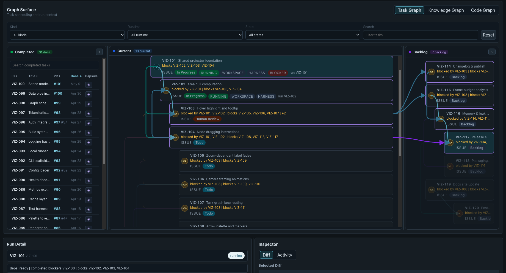
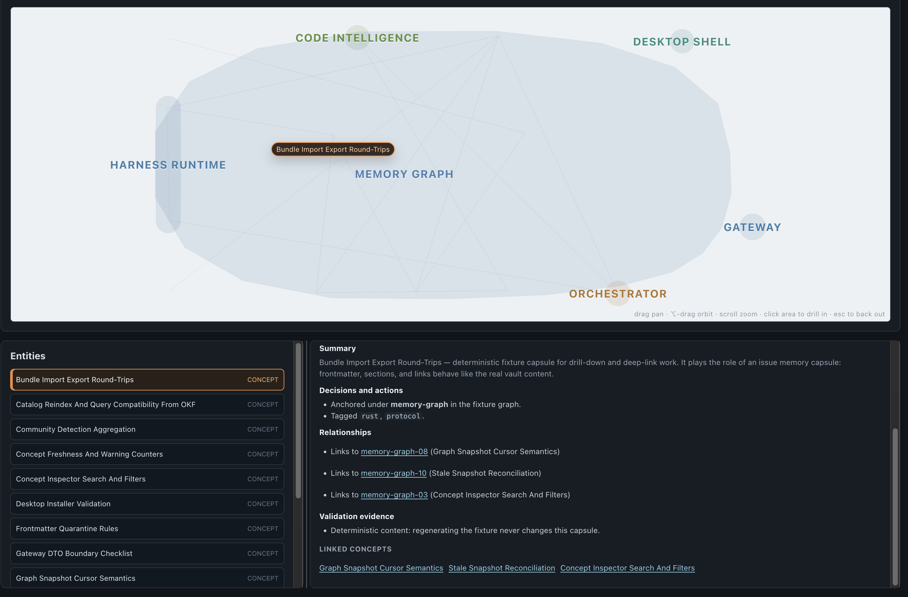

ESTACIÓN 7 · COHORTE 4
Orquestación de trabajo
Del spec a tareas ejecutables, revisión por agentes y memoria del proyecto.

OpenSymphony · captura de referencia del repositorio, con datos de ejemplo.
RECORRIDO · 120 MIN
Conceptos y demostración en vivo
Curso de Parlina
Seis secciones. Recorrido por las portadas de las 23 lecciones, con ejemplos para el proyecto.
OpenSymphony
Instalación, planificación, publicación, despacho, landing y navegación por los grafos.
Preguntas
Elección de arnés, integración con el proyecto y decisiones de automatización.
La demo sigue una tarea nueva y retoma otra que ya pasó por varios ciclos de revisión.
PARLINA · SECCIÓN 1
Fundamentos y Taxonomía de la Ingeniería Agencial
| Componente | Responsabilidad | Ejemplo concreto |
|---|---|---|
| Modelo | Interpreta contexto y propone acciones. | Decidir cómo corregir un fallo. |
| Arnés | Conecta modelo, herramientas, sesión y permisos. | Leer archivos, editar y ejecutar pruebas. |
| Skill | Describe un procedimiento reutilizable. | Descomponer un spec en tareas. |
| Orquestador | Coordina trabajo, dependencias e intentos. | Despachar una tarea cuando queda habilitada. |
| Cliente | Presenta el trabajo y sus controles. | Desktop, terminal o navegador. |
Lección 2: Orca, Paseo y OpenChamber permiten comparar la superficie cliente con las funciones de host y meta-arnés.
PARLINA · SECCIÓN 2
Patrones Arquitectónicos de Coordinación Agencial
| Patrón | Dónde guarda continuidad | Qué revisar al adoptarlo |
|---|---|---|
| Skills y planesSuperpowers, GSD original | Instrucciones, planes y resúmenes. | Cómo comprueba que cada paso terminó. |
| Bucle externoRalph y variantes | Git, progreso y resultados por intento. | Cuándo reintenta o se detiene. |
| Especialización y delegaciónoh-my-openagent (OmO) | Sesiones, configuración y memoria del entorno. | Cómo asigna modelos y especialistas; depende de la edición. |
| Coordinación multiagenteGas Town, caso histórico | Roles, colas, mensajes y workspaces. | Cómo recupera e integra trabajo. |
| Motor integrado con piGSD Pi · Open GSD | Hitos, slices, tareas e intentos del proyecto. | Cómo controla avance, verificación y recuperación. |
| Orquestación de trabajoSymphony / OpenSymphony | Tracker, política y ejecuciones. | Qué habilita el despacho y el cierre. |
PARLINA · SECCIÓN 3 · LECCIONES 8-11
Arneses de Desarrollo e Integración Programática
| Lección | Conceptos del curso | Aplicación en el proyecto |
|---|---|---|
| 08 · Codex app-server | JSON-RPC 2.0; Thread, Turn e Item; streaming, control de turnos y aprobaciones. | Diseñar el cliente y su contrato de ejecución, eventos y permisos. |
| 09 · pi SDK y extensiones | AgentSession y AgentSessionRuntime; concurrencia, eventos, permisos y registro de herramientas. | Integrar el arnés en proceso y controlar la cola de mutación de archivos. |
| 10 · oh-my-pi | Ejecución nativa; edición con Hashline; LSP, DAP y aislamiento de subagentes con pi-iso. | Analizar fallos de edición, comprobar semántica y depurar con herramientas estructurales. |
| 11 · Claude Agent SDK, OpenHands y OpenCode | Topologías de integración, acoplamiento a proveedores y políticas de aislamiento. | Elegir SDK según despliegue, modelos, permisos y sandboxing. |
La integración define cómo se inicia una ejecución, cómo se observa y qué controles limitan sus acciones.
PARLINA · SECCIÓN 4
OpenAI Symphony: Especificación Normativa y Motor Central
WORKFLOW.md
Configuración e instrucciones para ejecutar trabajo en el repositorio.
Hooks del workspace: preparación, comprobaciones y limpieza.
Reconciliación
Comparar ejecuciones activas con el estado vigente del tracker.
Decidir continuidad, reintento o interrupción según la política.
Una sesión que terminó todavía requiere comprobar el resultado del issue.
PARLINA · SECCIÓN 5
OpenSymphony: Implementación Local-First en Rust y Extensiones
| Superficie | Qué consultaremos en la demo |
|---|---|
| Grafo de tareas | Dependencias, trabajo activo y relación con ejecuciones. |
| Grafo de conocimiento | Cápsulas, decisiones, fuentes y relaciones entre trabajos. |
| Grafo de código | Símbolos y referencias extraídos con Tree-sitter. |
PARLINA · SECCIÓN 6
Gobernanza, Verificación Mecánica y Evaluación Empírica
| Decisión | Comprobación concreta |
|---|---|
| ¿Se puede despachar? | Dependencias resueltas, alcance definido, acceso y validación disponibles. |
| ¿El cambio cumple? | Criterios de aceptación, pruebas y comportamiento observado. |
| ¿Se puede integrar? | Revisión por agentes, hallazgos resueltos y CI sobre la revisión vigente. |
| ¿Qué hay que mejorar? | Eventos y comportamiento evaluado, fallos reproducibles y comparación de intentos. |
Un benchmark depende del modelo, el arnés, las herramientas, la configuración y el presupuesto utilizados.
Cambiar prompts, skills o el arnés exige volver a evaluar: una modificación puede mejorar unos casos y empeorar otros.
ACTUALIZACIÓN DEL CURSO
Gas Town: coordinación y confiabilidad
La propuesta de Yegge
Trabajo representado como grafo, con roles, memoria, autoridad, revisión y recuperación.
Su giro hacia Wheelhouse plantea una orquestación ligada a las necesidades del producto.
Síntesis aportada por el instructor de The Shape of Things to Come.
La crítica sobre resultados
El comentario citado en AI News interpreta que Yegge no logró construir algo con Gas Town y cuestiona la confiabilidad de estos orquestadores.
Es una crítica reportada; no aporta aquí una comparación experimental entre sistemas.
Para evaluar un orquestador: seguir tareas hasta su integración y registrar dónde necesitaron corrección o intervención.
OBSERVABILIDAD Y EVALUACIÓN
Qué aporta EBO hoy
Alcance actual
Observabilidad de eventos de agente y arnés, con una capa de ontología de comportamiento y su evaluación.
Permite analizar el comportamiento capturado; la evidencia disponible depende de la integración.
Posible extensión futura
Vincular esas observaciones con tareas, revisiones y resultados de integración.
Requeriría instrumentación adicional para investigar dónde falla la coordinación. No forma parte del alcance actual.
DEMO DEL INSTRUCTOR · 60 MIN
Del spec al landing
La tarea despachada puede seguir ejecutándose mientras examinamos el PR ya revisado.
DEMO · INSTALACIÓN
Conectar el repositorio, Linear y el arnés
Terminal del repositorio
cargo install opensymphony
opensymphony init
opensymphony run
# En otra terminal
opensymphony desktopComandos de la documentación de OpenSymphony.
Configuración que revisaremos
Acceso a Linear y al repositorio GitHub.
Arnés autenticado, modelo y permisos.
Proyecto observado, estados de trabajo y rama de destino.
WORKFLOW.md y config.yaml.
Arrancar el orquestador después de revisar el proyecto y la política de despacho.
DEMO · PLANIFICACIÓN
Del alcance completo a las tareas de Linear
| Skill | Resultado que inspeccionamos |
|---|---|
create-implementation-plan | Manifest, hitos y un archivo por tarea; aceptación, contexto y validación. |
convert-tasks-to-linear | Validación, dry-run y publicación del paquete revisado. |
linear | Consulta y actualización de issues, dependencias y estados. |
Cada requisito del alcance debe corresponder a tareas publicadas o a evidencia de implementación existente.
DEMO · DESPACHO
Qué recibe el agente
En la app: seleccionar el issue, abrir su ejecución y comprobar el contexto y los primeros eventos.
Si la tarea no se despacha, revisar dependencias, estado del issue y configuración antes de reintentar.
DEMO · REVISIÓN POR AGENTES
Entrega un cambio que se pueda revisar
| En el PR preparado | Qué comprobar |
|---|---|
| Ciclos anteriores | Un hallazgo, la corrección y la verificación posterior. |
| Revisión vigente | Que cubre el commit que se va a integrar. |
| Resultado | Aceptación cubierta, CI y ausencia de hallazgos pendientes que bloqueen el merge. |
La revisión debe corresponder al commit que se va a integrar.
DEMO · LANDING
Integrar el PR y actualizar el trabajo
En esta demostración
Comprobar el commit revisado, hacer merge y verificar el resultado en GitHub.
Actualizar Linear según el workflow y comprobar la captura de memoria.
Política del proyecto
El merge y el cambio de estado se pueden automatizar con condiciones explícitas.
La intervención humana permite decidir alcance, aceptar riesgos y conservar comprensión del código.
La política del proyecto define las condiciones de merge y de cierre en Linear.
DESKTOP · GRAFO DE TAREAS
Dependencias, ejecución y resultado
Captura de referencia con datos de ejemplo. En vivo: seleccionar una tarea, seguir sus dependencias y abrir ejecución y PR.
DESKTOP · GRAFO DE CONOCIMIENTO
Del Agent Workpad al contexto de otra tarea

Durante el trabajo
El Agent Workpad conserva decisiones, resultados y asuntos pendientes.
Después del cierre
La captura conserva conocimiento de la tarea y del PR en cápsulas durables.
En la siguiente tarea
Consultar memoria relacionada y comprobar sus fuentes antes de usarla como contexto.
Captura de referencia con una cápsula de ejemplo. En vivo: abrir una cápsula real y seguir un enlace a su fuente.
DESKTOP · GRAFO DE CÓDIGO
Localizar símbolos y comprobar el código vigente
En la app
Buscar un símbolo, abrir sus relaciones y navegar al archivo correspondiente.
Comparar con el diff de una ejecución cuando esté disponible.
En el trabajo del agente
Usar el índice para encontrar código relevante y comprobar el AST del workspace antes de editar.
La búsqueda estructural orienta la modificación; las pruebas comprueban su efecto.
APLICACIÓN EN EL PROYECTO
Probar orquestación con el plan de E6
Usa OpenSymphony para recorrer una tarea de tu proyecto desde el despacho hasta la integración y la memoria.
| Con cualquier arnés u orquestador | Qué conservar |
|---|---|
| Despacho | Tarea identificable, dependencias y condiciones de inicio. |
| Contexto | Instrucciones, código y decisiones relevantes. |
| Continuidad | Notas de trabajo, evidencia y memoria consultable. |
| Integración | Revisión por agentes, validación y política de cierre. |
Un orquestador propio se justifica cuando necesitas reglas o integraciones que los existentes no cubren y puedes mantener su operación.
OpenSymphony · Recursos de E6 y E7 · Preparación del plan completo